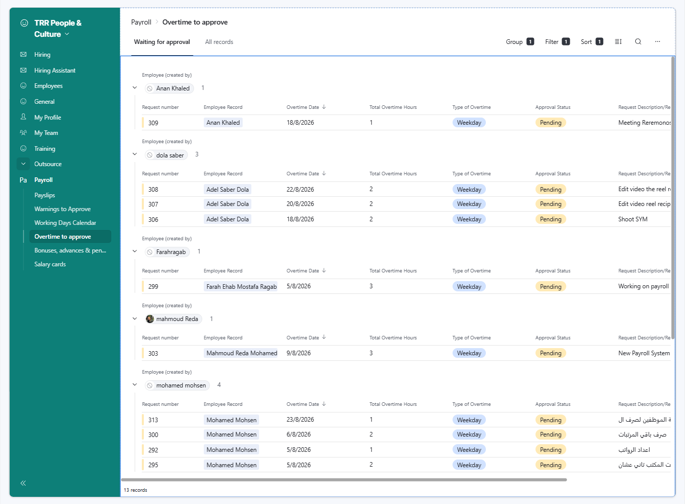
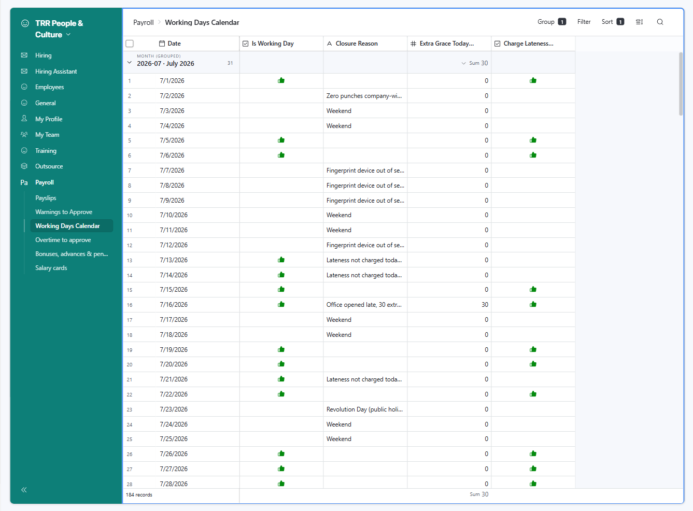
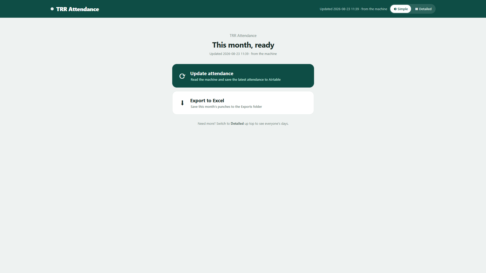
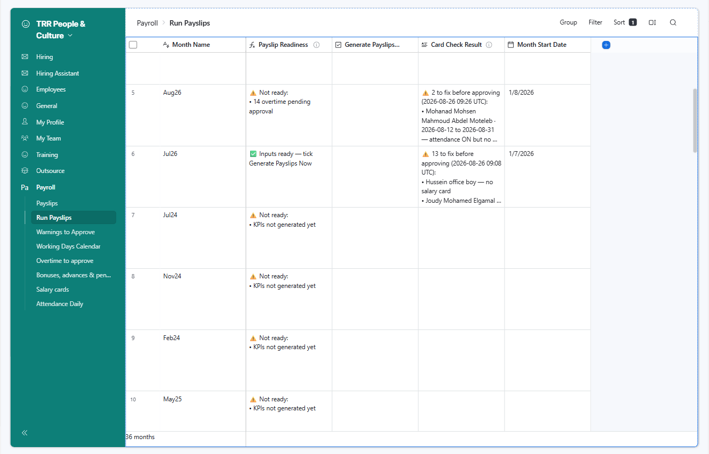
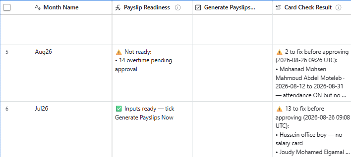
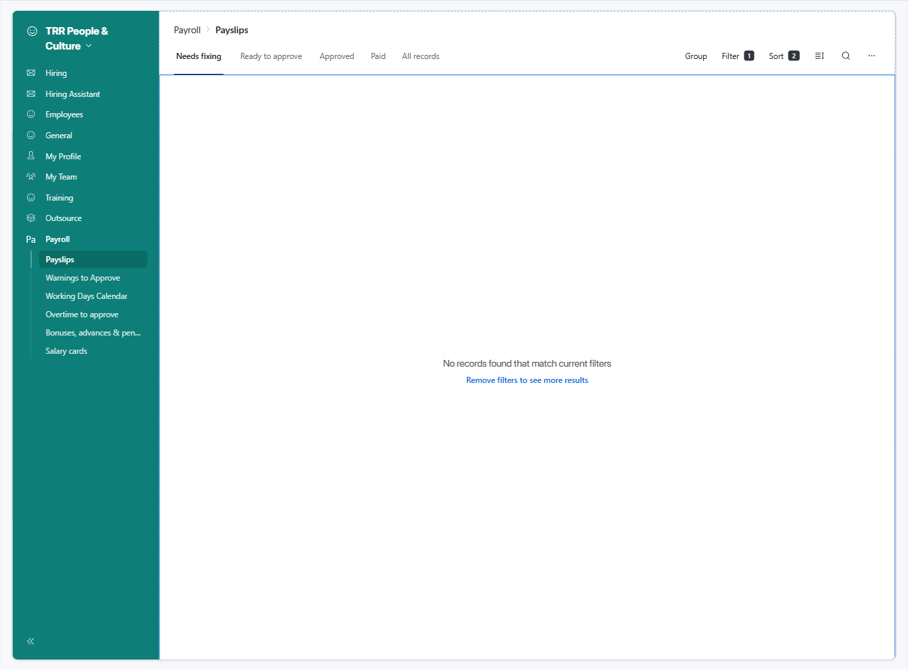
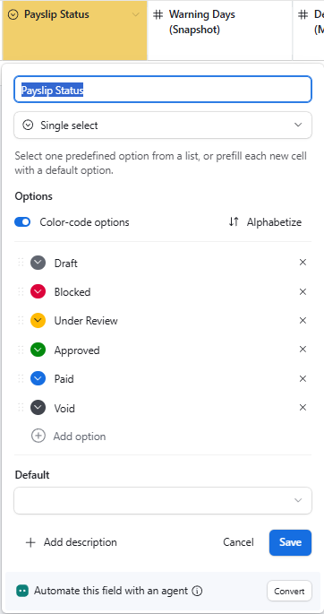

Run payroll
The monthly close · 10 steps, in order
🚀
0%
Before the run · last day or two
-
- In the Payroll interface, open Overtime to approve and check nothing's left on Pending. Leaves & KPIs are the managers' to approve (in My Team) — just make sure they're done.
- You approve the Bonuses, advances & penalties page: open each and set Approval Status to Approved.
Anything left Pending blocks that person's payslip.Make sure leaves are approved before the attendance import — a day off that's still Pending gets charged as absent.
▦Screenshot slot. The approvals page in the interface, with anything still Pending showing.screenshots/01-pending-approvals.png -
- In the interface, open the Working Days Calendar and find the day by its Date.
- Holiday / office closed? Untick Is Working Day and fill Closure Reason.
- Opened late? Put the minutes in Extra Grace Today (min) — e.g. 30.
- No lateness charged that day? Untick Charge Lateness Today.
This touches everyone at once.An unmarked holiday charges the whole company as absent. Always leave a reason.
▦Screenshot slot. One Working Days Calendar record.screenshots/02-working-days-calendar.png -
- In the interface, open the leaver's Contract. Fill Termination Date = their true last working day, then tick Contract Terminated.
- Check the date against their last fingerprint punch before paying.
Date FIRST, then the tick.Tick with the date empty and the system stamps today — closing their pay on the wrong day. -
- Open the TRR Attendance page.
- Click Update attendance — it reads the machine and saves straight to Airtable. Running it again is safe.
The one hard deadline.If attendance isn't imported, everyone is paid in full with no absences taken off.
▦Screenshot slot. The TRR Attendance page with the Update attendance button.Screenshots/ss04.png
Generate the payslips · when the check says ready
-
- In the Payroll interface, open the Run Payslips page and find this month.
- Read Payslip Readiness. 🟢 "Inputs ready" — go on. 🔴 "Not ready" — it lists what's missing (overtime pending, KPIs not generated…); fix those first, and it turns green on its own.
- When green, tick Generate Payslips Now. The payslips build, then the box unticks itself — that means it finished.
Safe to re-tick.Running it again never duplicates and never touches an already-approved payslip. Tick again any time you've changed something.
▦Screenshot slot. The Run Payslips page: the readiness message and the Generate Payslips Now checkbox.Screenshots/ss05.png -
- On the same Run Payslips page, read Card Check Result. ✅ "All clean" — nothing to do. ⚠ names listed — each says the problem (no salary card, or attendance not imported).
- For anyone named "no salary card": open the Salary cards page. Either they're a real paid person who needs a card (usually add their contract and the card appears), or they don't get paid here — tick Payroll Exclude on their employee record.
- Fix the named people, then tick Generate Payslips Now again and re-read — it should go ✅.
- Finally, open the Payslips page and check everyone expected has one.
The card check catches silent overpay."Attendance not imported" or "no salary card" means someone would be paid wrong. Clear the list before approving.
▦Screenshot slot. The Card Check Result field showing an example ✅ clean and a ⚠ with names.Screenshots/ss06.png -
- In the interface, set each payslip's Payslip Status to Under Review. A payslip only shows its blockers after it's Under Review — a problem one turns Blocked.
- On a Blocked one, read the Blockers — the message says what's wrong.
- Fix the cause (approve the bonus, add a missing date…). It clears itself — no button.
A block is protection, not a fault.It refuses to pay a wrong number that would look right.
▦Screenshot slot. A payslip in the interface showing a real blocker message.screenshots/08-blockers-column.png -
- On the Payslips page, look down the Net Pay column and make sure the numbers look right.
- Anything that looks off — open that payslip and check it before approving.
Point of no return
Approve & pay · one-way
-
- On the Payslips page, set each clean payslip (not Blocked) to Approved.
- Anything still wrong snaps back to Blocked — your safety net.
- Approved takes a snapshot and freezes it. Nothing is sent yet.
Check before you approve.Once locked, a fix means a correction next month, not an edit.
▦Screenshot slot. The Payslip Status dropdown in the interface: Draft → Under Review → Approved → Paid.screenshots/10-status-flow.png -
- After you've actually transferred the salaries, set the payslip's Payslip Status to Paid in the interface.
- That emails each person their full breakdown.
First live month only.Turn the payslip-email automation on right before this — it's kept off until now so nobody's emailed by accident. After the first month it stays on.
Tap a step to open the how-to · tap the circle on the right to check it off · progress saves on this device